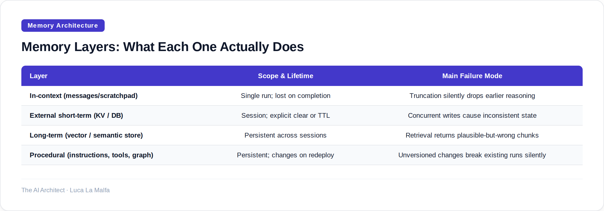
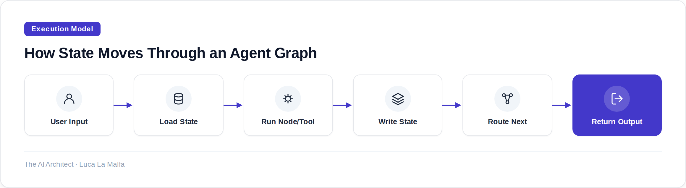

Most agent failures trace back to bad memory design, not bad models — here's how to fix that.
November 14, 2026
29,684 commits in three weeks. That's roughly what a swarm of agents produced building the AWS emulator. I don't cite this to marvel at the volume — I cite it because it raises an obvious question nobody asks loudly enough: what did those agents remember between steps? What state did they share? Who tracked which file had already been touched, which interface contract had been agreed on, which decision had been made three hundred commits ago? If the answer is "nothing systematic," the output is either a miracle or a mess. Usually both.
Memory is the part of agent architecture that practitioners consistently underdesign. Everyone spends time on the model, the tools, the routing logic. Then they wire up a simple list of messages as "context" and call it done. That works fine for a single-turn demo. It falls apart the moment your agent runs more than a handful of steps, touches external state, or needs to be resumed after a failure.
There are four distinct kinds of memory an agent can use, and conflating them is the root of most production problems I've debugged. The first is in-context memory — the messages or scratchpad sitting inside the active prompt window. Fast, zero-latency, but ephemeral and capacity-limited. The second is external short-term memory — a key-value store, a vector index, or a simple database that the agent reads and writes during a session. The third is long-term memory — retrieved from persistent storage across sessions, often via semantic search. The fourth, and most underused, is procedural memory — the agent's instructions, tool definitions, and workflow structure itself, which encodes what the agent knows how to do rather than what it knows.
Each of these has a different access pattern, a different failure mode, and a different cost. In-context memory gets stale or truncated. External short-term memory introduces consistency bugs when two agent branches write concurrently. Long-term memory retrieval can silently surface irrelevant chunks that steer the agent wrong. Procedural memory is the one people forget to version. Knowing which layer to put information on is a design decision, not a default.

State management adds another axis on top of memory: not just what the agent knows, but what it's doing. A stateful agent graph tracks where in a workflow execution currently sits — which nodes have run, what their outputs were, which branches were taken. This is distinct from memory because it's about control flow, not information. Without explicit state tracking, you can't pause and resume a long run, you can't retry a failed step without re-running everything before it, and you can't audit what actually happened after the fact.
The practical implication is that any agent doing non-trivial work needs a state schema — an explicit definition of every field that must survive between steps. Treat it like a database schema, not an afterthought. Define types. Define defaults. Define which fields are append-only (event logs, tool outputs) versus mutable (current plan, working memory). If you can't write down your state schema on a whiteboard in five minutes, your agent's memory design isn't finished.

One thing I've learned the hard way: checkpointing is not optional for anything that runs longer than thirty seconds or touches external APIs. A checkpointer saves the full state snapshot after each node completes. If the run fails at node seven, you resume from node six's snapshot — not from scratch. This sounds obvious, but most teams don't build it until after their first painful production incident where a three-minute agent run died at the last step and had to be restarted entirely, re-running all the expensive API calls along the way.
The other discipline that matters is separating read state from write state in your node design. Each node should declare what it reads from the state and what it writes back. Nodes that read and write the same fields they didn't own are where race conditions and hard-to-trace bugs live in multi-agent or parallel-branch graphs. If you enforce this separation even informally, debugging becomes dramatically faster because you can trace any state field back to exactly one owner.
The schema rule I enforce first
Before I write a single node, I write the state TypedDict (or Pydantic model). Every field gets a name, a type, and a one-line comment on who owns it. Then I pass that schema around to every collaborator or client before we touch code. This single habit has caught more design problems earlier than any other practice I've adopted — because the moment you try to name every field, you discover the fields you hadn't thought about yet.
langchain-ai/langgraph — Stateful agent graphs with built-in persistence and memory.
Inspired by aws-emulator (Simon Willison)